Image Triangulation with Julia
I have always been fascinated by computer generated art. Recently, I came across the paper Stylized Image Triangulation by Kai Lawonn and Tobias Günther. In this paper, the authors perform image triangulation (approximating an image by tessellation with triangles) by coming up with an initial grid and performing gradient descent. They achieve beautiful triangulations that capture the original images very well. Their code is a combination of MatLab and C++, and is available on github.
As a fun exercise in Julia, I implemented part of their method in a Pluto notebook (like a Jupyter notebook but especially for Julia, see here). My notebook is available on Github.
Summary of method
In the paper, the authors start with an initial grid of points that defines a triangulation. This grid can either be a regular layout, in which the points are spaced evenly across the width and height of an image, or it can be made via importance sampling, in which ‘important’ regions of the image are found and points are sampled, weighted by this importance. Every triangle gets a constant color, calculated as the mean of the colors of its interior points in the original image.
As an example, consider this image of a beautiful bird called a Bearded reedling (Panurus biarmicus), taken from this YouTube video.
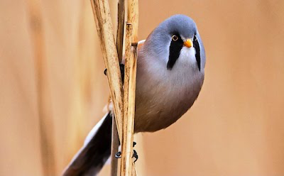
The two types of initial triangulation are the regular layout (in this case with 50 triangles),
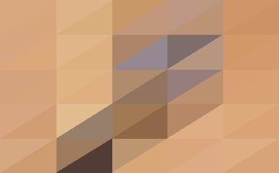 and the triangulation based on importance sampling (in this case by sampling 50 points). 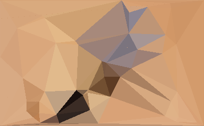
Starting with such a triangulation, the triangles are improved iteratively by gradient descent. For every point, a small change in the horizontal and vertical direction is tried, and a gradient is calculated by calculating the errors of the point’s adjacent triangles for each such configuration. The error of a triangle is defined as the mean of the differences of its interior points’ colors, compared to the original image. This way, the initial triangulation gets better every step, but it may converge to a local optimum, depending on the initial triangulation.
On top of gradient descent, every couple of steps, every triangle can be split into three by placing an additional point at its centroid. This way, large triangles that have a big error can be split up into smaller triangles with different colors and smaller errors. The triangles eligible for this splitting have to be large enough, should not be too narrow, and should have a large error. These thresholds, together with the number of steps, step size, and other parameters can be tweaked in the code, yielding different results.
An example output is the below, in which the initial grid was a regular layout, and which resulted in an image of 700 triangles. 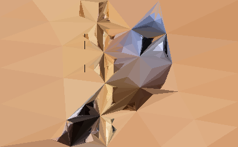
For a more mathematically thorough explanation, I refer to the original paper.
More results
Another beautiful picture of the same species of bird is the following (source by Kaeptn chemnitz, CC BY 3.0, via Wikimedia Commons).
_by_Wolfram_Riech.jpg){kind=link}
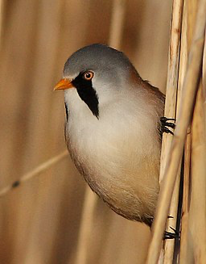
The resulting triangulations are more abstract than the above, but I think they are beautiful. The results with 100, 500, 1000 and 2000 triangles are below.
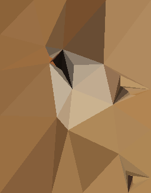 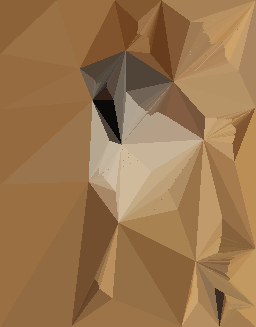 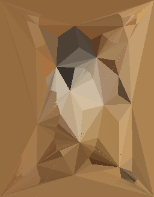 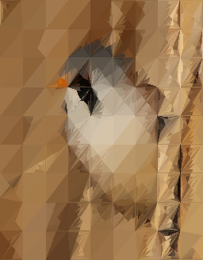
Two more examples of triangulations with 2000 triangles are below. They represent a bluethroat and a red-backed shrike.
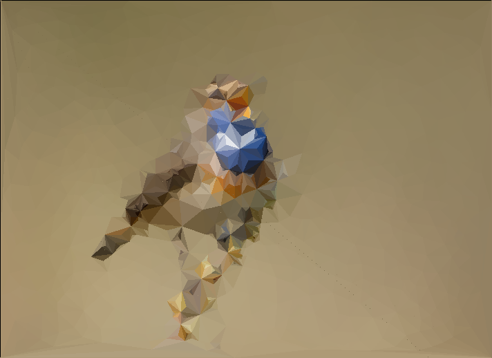 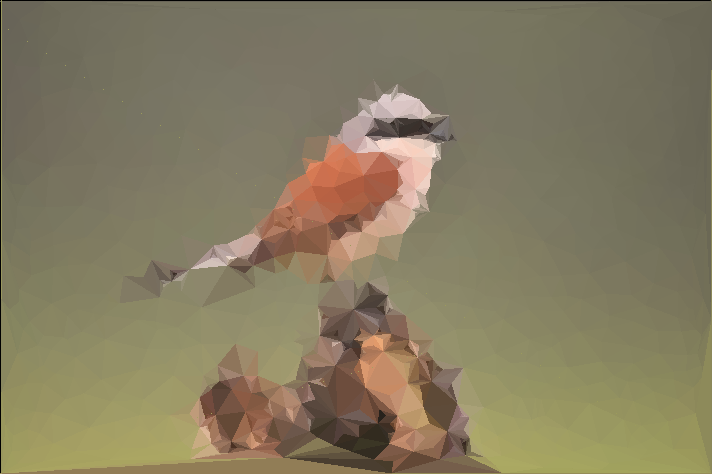
More results (June 2022)
I have updated the code to make the drawing faster and to include more techniques from the paper (edge flips and node collapse).
Below is the new code demonstrated on the Lee Morgan album cover Lee-way after 50, 100, 120 and 250 steps.
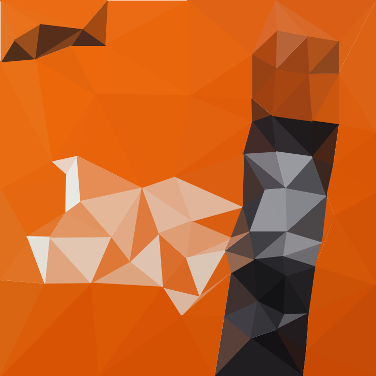 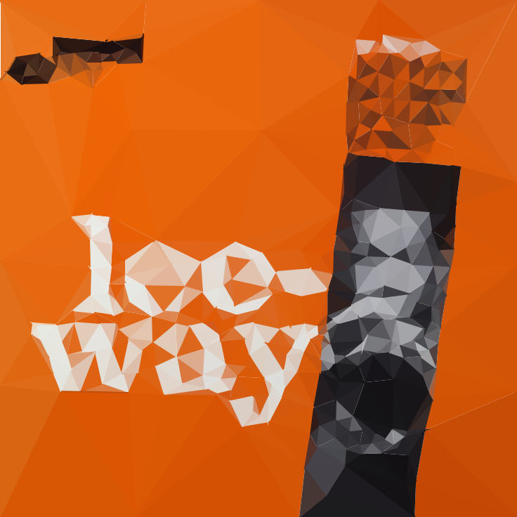 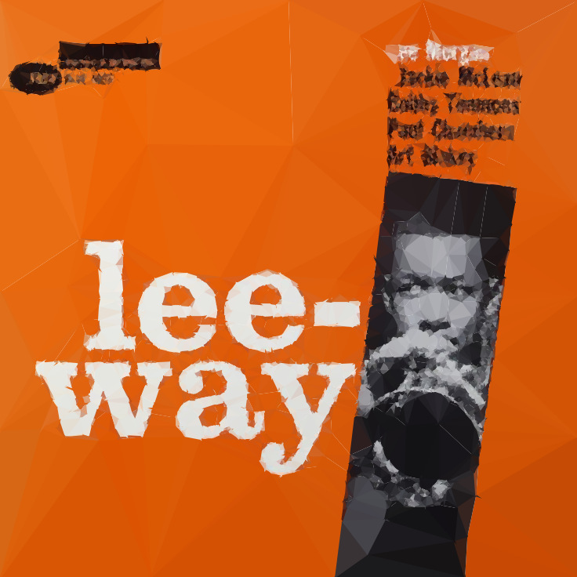
And the same on Cannonball Adderley’s album Somethin’ Else. 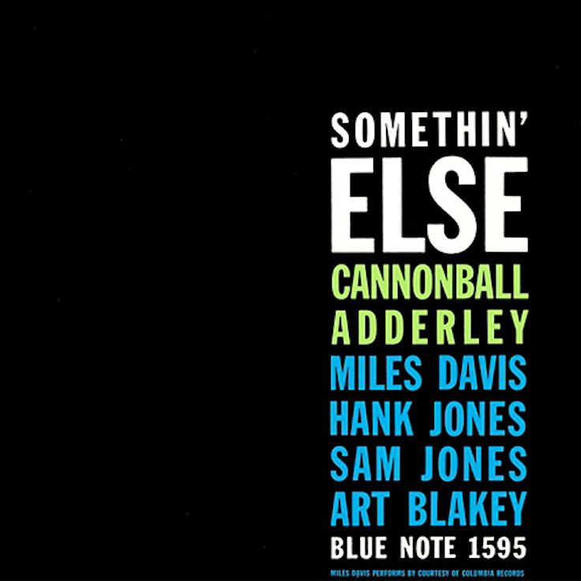 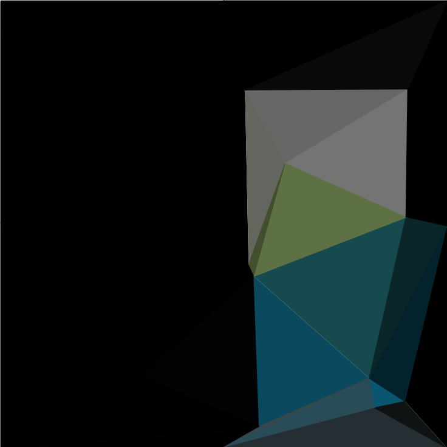 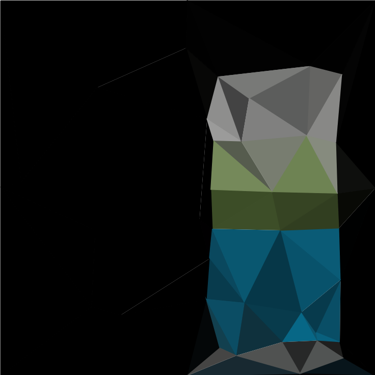 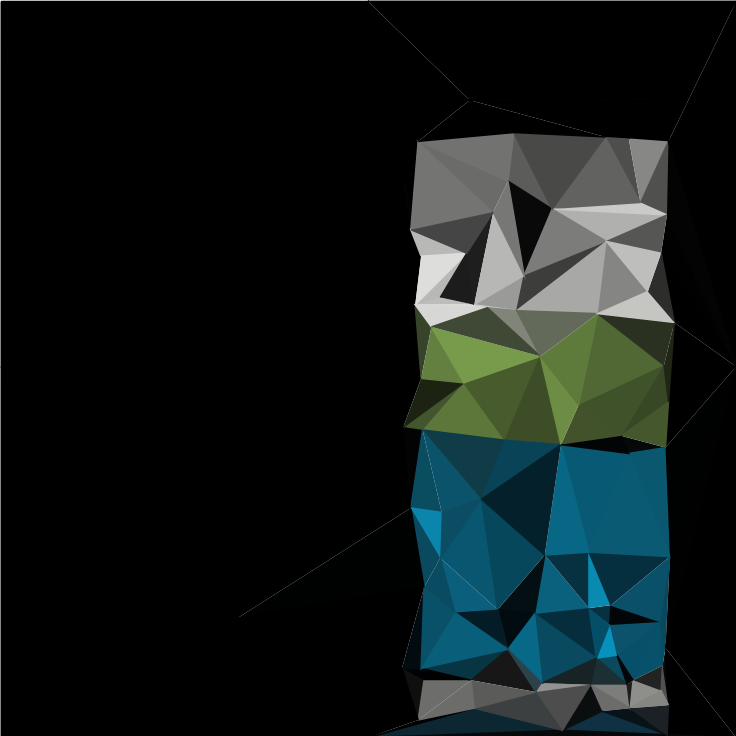 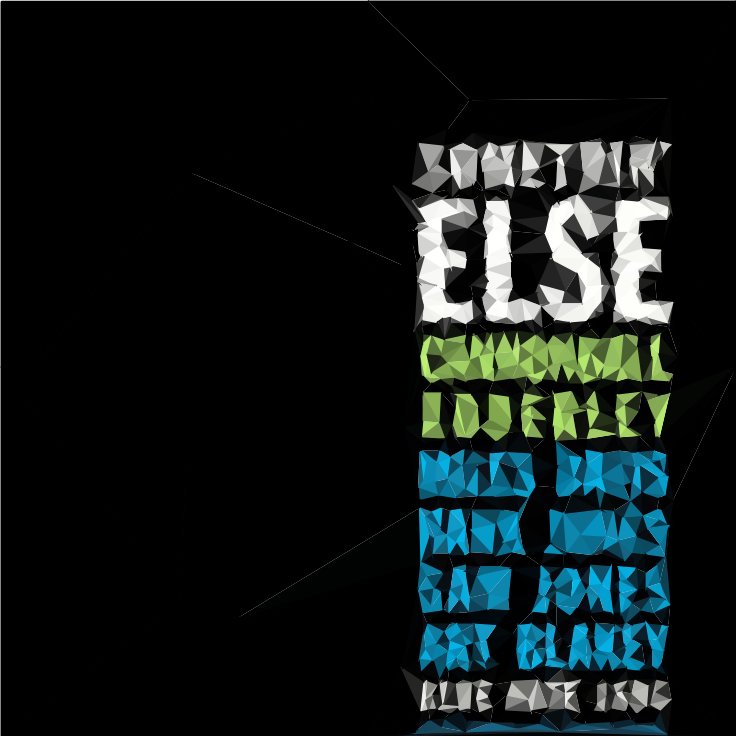 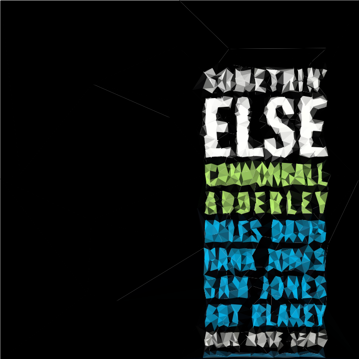
Conclusion
Implementing part of the methodology of the paper in Julia was fairly straightforward, even though my experience with the language is limited. However, the performance is not as good as I hoped it would be. Generating the above images took a couple of minutes upto half an hour each. This makes it hard to fiddle around with the parameters, since a lot of time is spent waiting for the results. The authors of the paper wrote parts of their code in C++ because of performance, and parallelized and optimized the code such that it was faster. Although Julia code can be fast, my naive implementation still requires lots of loops (over the triangles, points, pixels), so it makes sense for it to be slow. That said, even though my implementation is naive, a pretty triangulation is only a key-press away and can be generated in a couple of minutes.
As stated, the notebook is available on GitHub, so feel free to try it out!